Le miel de lavande de notre Provence
Une histoire de terroir et de passion.
Nous croyons à la force du temps, du climat, et du savoir-faire.
Notre miel monofloral de lavande est récolté au cœur des Gorges de
la Nesque, en Provence, dans le respect de la nature et du rythme
des abeilles.
C'est une aventure familiale, ancrée dans le territoire, qui
privilégie la qualité à la quantité, et le lien direct avec nos
clients. Chaque pot que nous préparons incarne notre engagement :
proposer un miel pur, authentique, au goût unique.
Notre Miel de Lavande récolté en Provence
Naturellement riche en antioxydants
Propriétés apaisantes
Boost vos défenses immunitaires
Riche, floral et savoureux, ce miel monofloral de lavande est entièrement récolté avec passion sur nos terres en Provence, en plein dans les Gorges de la Nesque.
Vos avis
Émilie Avignon
21 Mai 2025
J'ai acheté ce miel un peu par curiosité… et je suis tombée amoureuse dès la première dégustation. On sent tout de suite que c'est un produit naturel, local, fait avec soin. La lavande est présente mais subtile, juste...
Lire plus
Mathile Royer
11 Mai 2025
Ce miel est tout simplement délicieux. On sent la lavande sans que ce soit trop fort. J'en mets dans mes tisanes tous les soirs. Un vrai petit luxe local !
Lire plus
Julien Renaux
02 Juin 2025
Ce miel m’a rappelé mes vacances en Provence, quand on sentait la lavande en pleine nature. Il a une texture crémeuse, un goût rond, fleuri, mais pas trop sucré. Et surtout, il ne pique pas la gorge comme certains...
Lire plus
Vos questions, nos réponses!
Ou est produit votre miel ?
La totalité de notre miel de lavande de Provence provient directement du producteur. Nos ruches sont localisés dans les Gorges de la Nesque sous le soleil du Sud-Est dans le Vaucluse.
Pourquoi mon miel de lavande se crstallise ?
Le miel de lavande est produit quand les abeilles butinent les fleurs de lavande en été. Un apiculteur de Provence installe ses ruches près des champs pour que les abeilles récoltent un nectar pur. Il est transformé en miel de lavande similaire au miel de garrigue qui lui utilise plusieurs plantes.
Comment faire du miel de lavande ?
Le miel de lavande est produit quand les abeilles butinent les fleurs de lavande en été. Un apiculteur de Provence installe ses ruches près des champs pour que les abeilles récoltent un nectar pur. Il est transformé en miel de lavande similaire au miel de garrigue qui lui utilise plusieurs plantes.
Quels sont les bienfaits du miel de lavande ?
Reconnu pour ses vertus apaisantes, le miel de lavande aide à calmer les maux de gorge, favoriser le sommeil et renforcer le système immunitaire. Il est également riche en antioxydants naturels.